Change analysis for United States for PRIMAP-hist v2.6.1_final
compared to v2.6_final
Overview over
emissions by sector and gas
The following figures show the aggregate national total emissions
excluding LULUCF AR6GWP100 for the country reported priority scenario.
The dotted linesshow the v2.6_final data.
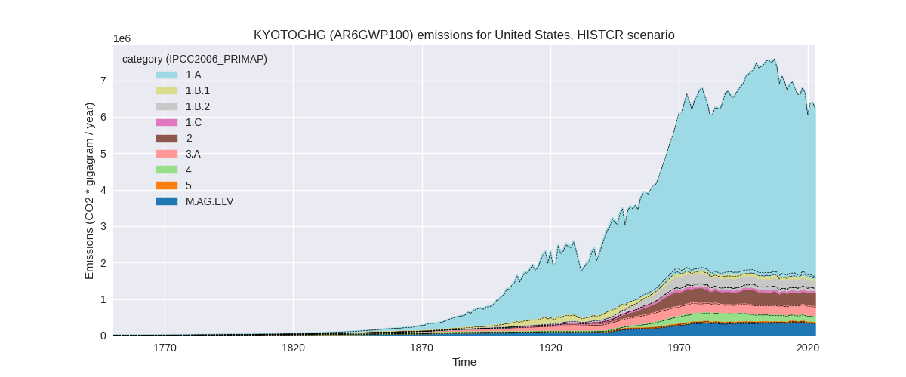
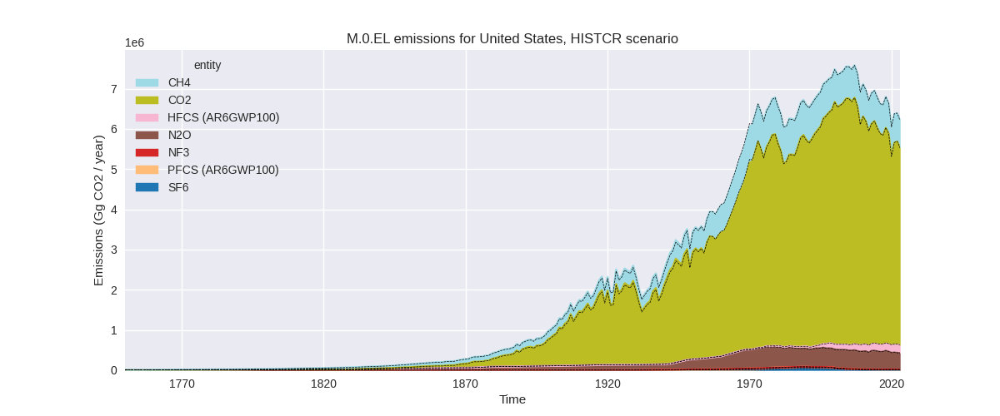
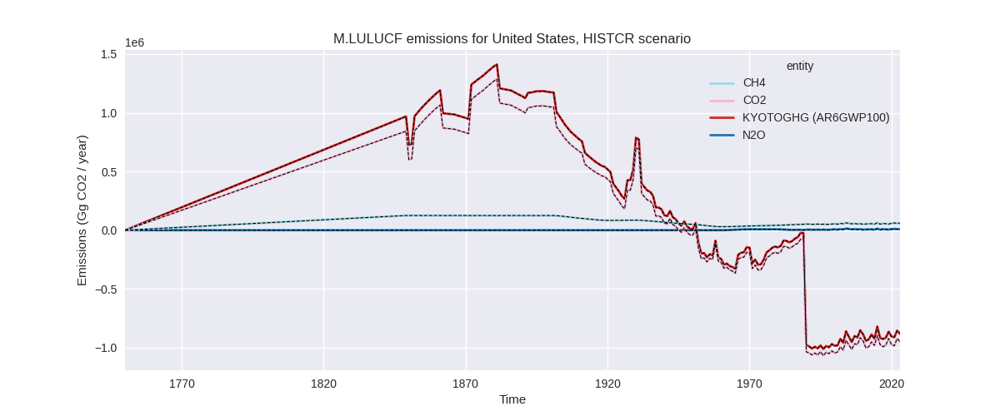
The following figures show the aggregate national total emissions
excluding LULUCF AR6GWP100 for the third party priority scenario. The
dotted linesshow the v2.6_final data.
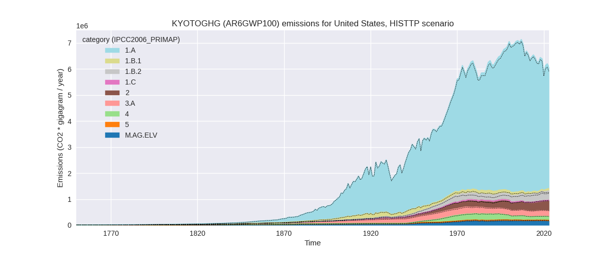
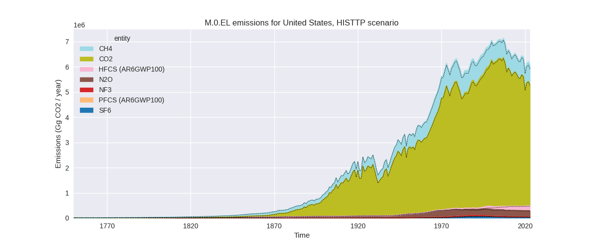
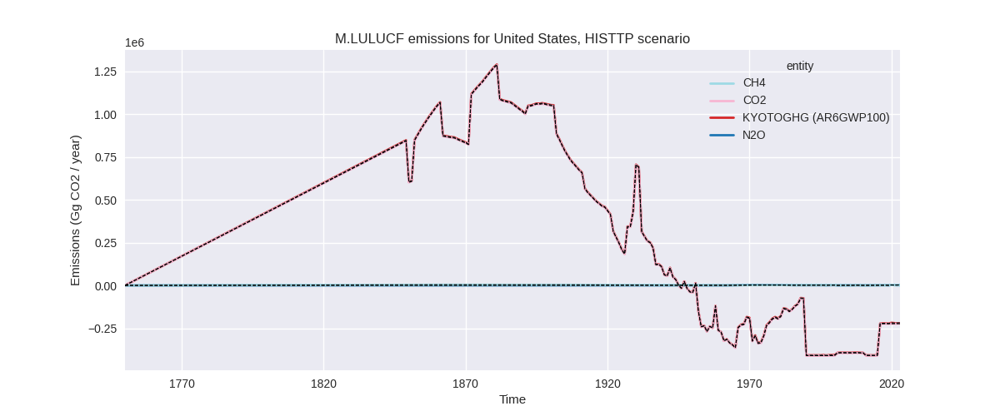
Overview over changes
In the country reported priority scenario we have the following
changes for aggregate Kyoto GHG and national total emissions excluding
LULUCF (M.0.EL):
- Emissions in 2023 have changed by 0.6%% (40199.40 Gg CO2 / year)
- Emissions in 1990-2023 have changed by 0.1%% (4482.92 Gg CO2 / year)
In the third party priority scenario we have the following changes
for aggregate Kyoto GHG and national total emissions excluding LULUCF
(M.0.EL):
- Emissions in 2023 have changed by 2.6%% (156155.10 Gg CO2 / year)
- Emissions in 1990-2023 have changed by 1.2%% (79847.60 Gg CO2 / year)
Most
important changes per scenario and time frame
In the country reported priority scenario the
following sector-gas combinations have the highest absolute impact on
national total KyotoGHG (AR6GWP100) emissions in 2023
(top 5):
- 1: 1.A, CO2 with 111360.70 Gg CO2 / year (2.5%)
- 2: 2, CO2 with -99295.54 Gg CO2 / year (-37.3%)
- 3: 1.B.2, CH4 with 17923.35 Gg CO2 / year (8.4%)
- 4: 2, HFCS (AR6GWP100) with -15972.81 Gg CO2 / year (-7.3%)
- 5: M.AG.ELV, N2O with 14603.02 Gg CO2 / year (5.1%)
In the country reported priority scenario the
following sector-gas combinations have the highest absolute impact on
national total KyotoGHG (AR6GWP100) emissions in
1990-2023 (top 5):
- 1: 1.A, CO2 with 120702.73 Gg CO2 / year (2.3%)
- 2: 2, CO2 with -107427.18 Gg CO2 / year (-36.1%)
- 3: 2, HFCS (AR6GWP100) with -8588.19 Gg CO2 / year (-5.8%)
- 4: 5, N2O with -1806.87 Gg CO2 / year (-7.5%)
- 5: 1.B.2, CH4 with 530.15 Gg CO2 / year (0.2%)
In the third party priority scenario the following
sector-gas combinations have the highest absolute impact on national
total KyotoGHG (AR6GWP100) emissions in 2023 (top
5):
- 1: 1.B.2, CH4 with 95560.45 Gg CO2 / year (37.9%)
- 2: 1.B.1, CH4 with 35674.04 Gg CO2 / year (131.1%)
- 3: 2, HFCS (AR6GWP100) with 15931.70 Gg CO2 / year (8.6%)
- 4: 2, SF6 with 10730.60 Gg CO2 / year (34.8%)
- 5: 1.B.1, CO2 with 10228.68 Gg CO2 / year (74.5%)
In the third party priority scenario the following
sector-gas combinations have the highest absolute impact on national
total KyotoGHG (AR6GWP100) emissions in 1990-2023 (top
5):
- 1: 1.B.2, CH4 with 40020.67 Gg CO2 / year (17.6%)
- 2: 2, HFCS (AR6GWP100) with 20780.44 Gg CO2 / year (18.8%)
- 3: 2, SF6 with 13134.04 Gg CO2 / year (31.7%)
- 4: 1.B.1, CH4 with 8721.51 Gg CO2 / year (11.0%)
- 5: 4, CH4 with -4263.93 Gg CO2 / year (-2.5%)
Notes on data changes
Here we list notes explaining important emissions changes for the
country.
- CRT data has been included which replaces official data.
- The CRT data is consistently higher for energy CO2 and consistently
lower for CO2 in 2.D. This is due to different accounting of non-fuel
use of fossil fuels which is reported under 1.A.5.a in CRT data instead
of 2.D.
- The lower HFC emissions are likely also due to an accounting
difference as the CRT data is in line with CRF2023.
- Other 2023 changes in the CR time-series are mostly due to updated
EDGAR data which is used to extrapolate country reported emissions.
- For N2O in sector 5 there are no country reported emissions and the
changes in EDGAR emissions are directly reproduced in the CR
time-series.
- In the TP time-series the main changes are due to updated EDGAR
data.
Changes by sector and gas
For each scenario and time frame the changes are displayed for all
individual sectors and all individual gases. In the sector plot we use
aggregate Kyoto GHGs in AR6GWP100. In the gas plot we usenational total
emissions without LULUCF.
country reported scenario
2023
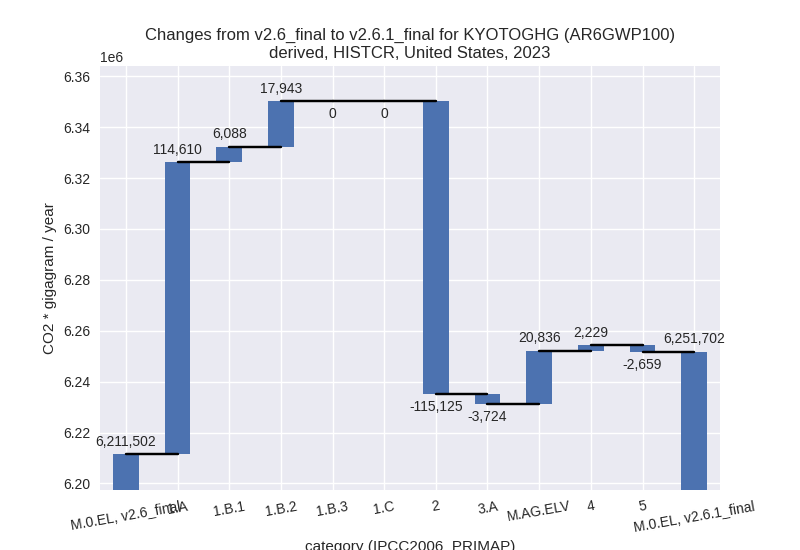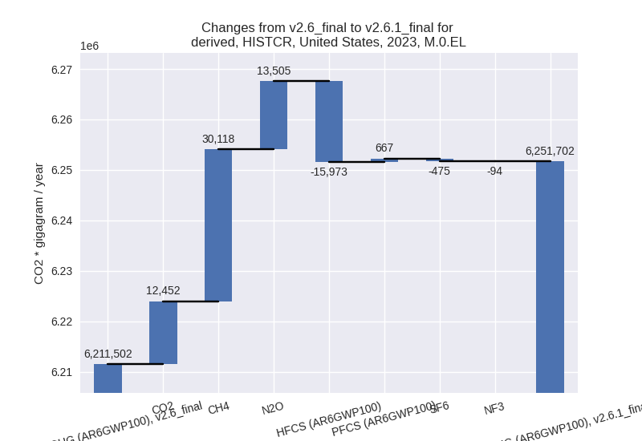
1990-2023
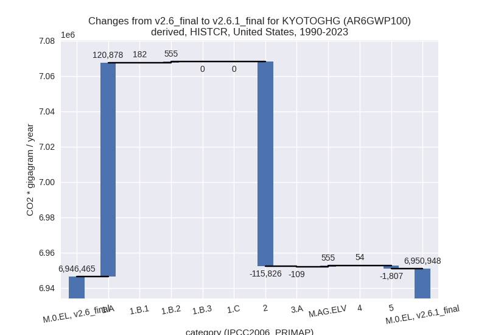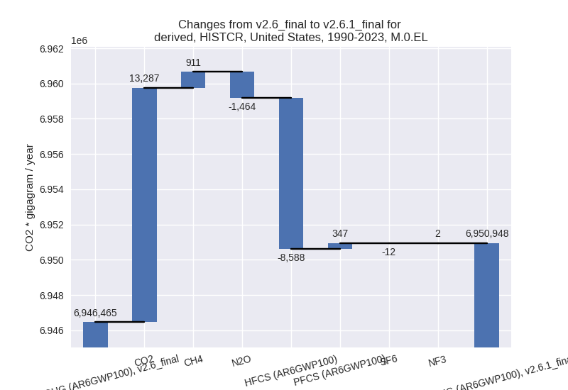
third party scenario
2023
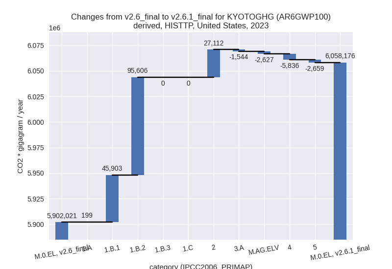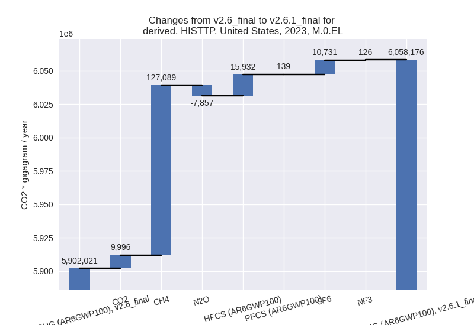
1990-2023
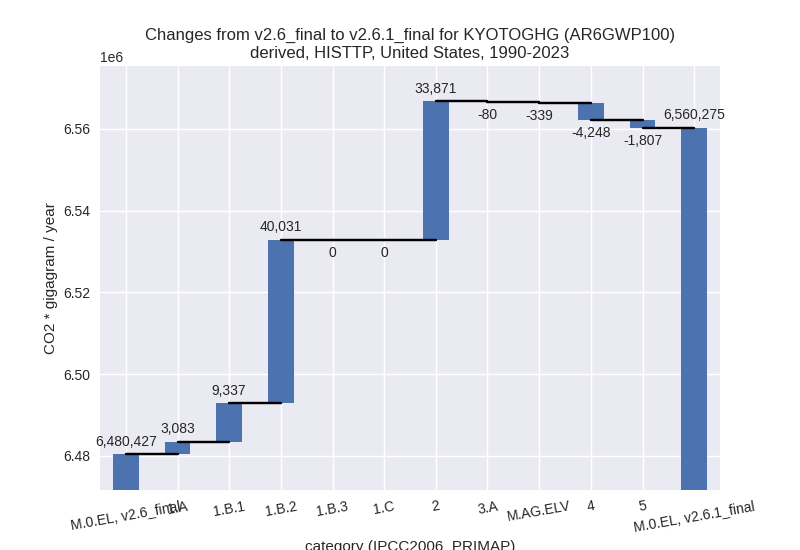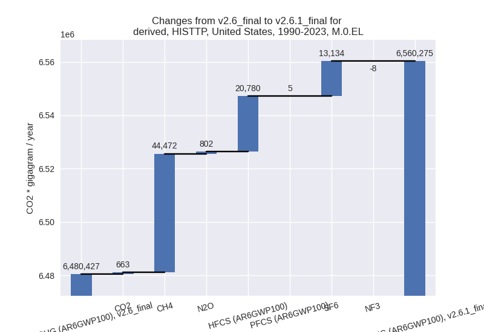
Detailed changes for the
scenarios:
country reported scenario
(HISTCR):
Most important changes
per time frame
For 2023 the following sector-gas combinations have
the highest absolute impact on national total KyotoGHG (AR6GWP100)
emissions in 2023 (top 5):
- 1: 1.A, CO2 with 111360.70 Gg CO2 / year (2.5%)
- 2: 2, CO2 with -99295.54 Gg CO2 / year (-37.3%)
- 3: 1.B.2, CH4 with 17923.35 Gg CO2 / year (8.4%)
- 4: 2, HFCS (AR6GWP100) with -15972.81 Gg CO2 / year (-7.3%)
- 5: M.AG.ELV, N2O with 14603.02 Gg CO2 / year (5.1%)
For 1990-2023 the following sector-gas combinations
have the highest absolute impact on national total KyotoGHG (AR6GWP100)
emissions in 1990-2023 (top 5):
- 1: 1.A, CO2 with 120702.73 Gg CO2 / year (2.3%)
- 2: 2, CO2 with -107427.18 Gg CO2 / year (-36.1%)
- 3: 2, HFCS (AR6GWP100) with -8588.19 Gg CO2 / year (-5.8%)
- 4: 5, N2O with -1806.87 Gg CO2 / year (-7.5%)
- 5: 1.B.2, CH4 with 530.15 Gg CO2 / year (0.2%)
Changes in the main sectors for aggregate KyotoGHG (AR6GWP100)
are
- 1: Total sectoral emissions in 2022 are 5200030.90
Gg CO2 / year which is 81.4% of M.0.EL emissions. 2023 Emissions have
changed by 2.8% (138641.80 Gg CO2 /
year). 1990-2023 Emissions have changed by 2.2% (121614.63 Gg CO2 / year). For 2023
the changes per gas
are:
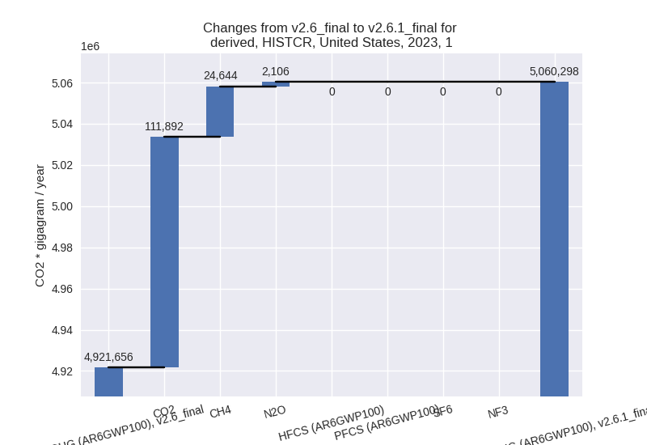
For 1990-2023 the changes per gas
are:
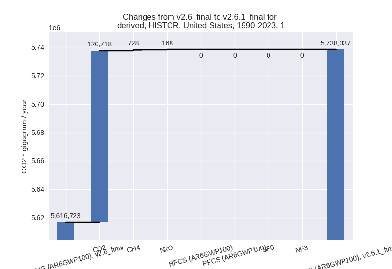
The changes come from the following subsectors:
- 1.A: Total sectoral emissions in 2022 are
4868729.30 Gg CO2 / year which is 93.6% of category 1 emissions. 2023
Emissions have changed by 2.5%
(114610.50 Gg CO2 / year). 1990-2023 Emissions have changed by 2.3% (120877.59 Gg CO2 / year). For 2023
the changes per gas
are:
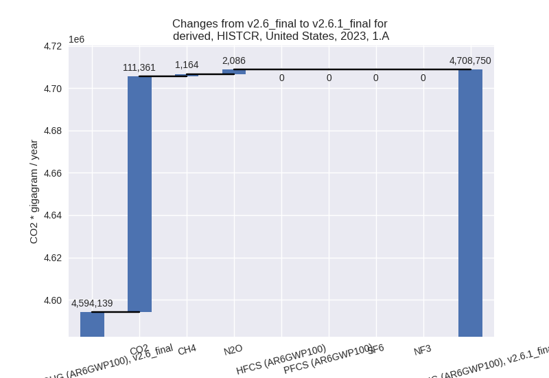
For 1990-2023 the changes per gas
are:
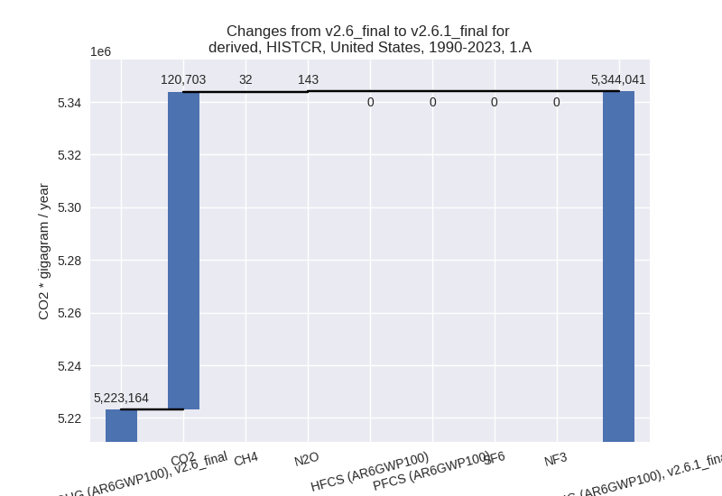
There is no subsector information available in PRIMAP-hist.
- 1.B.1: Total sectoral emissions in 2022 are
52221.58 Gg CO2 / year which is 1.0% of category 1 emissions. 2023
Emissions have changed by 13.4%
(6088.39 Gg CO2 / year). 1990-2023 Emissions have changed by 0.2% (181.64 Gg CO2 / year). For 2023 the
changes per gas
are:
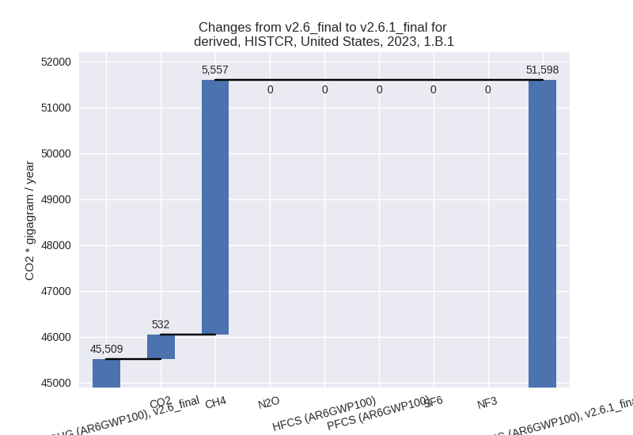
There is no subsector information available in PRIMAP-hist.
- 1.B.2: Total sectoral emissions in 2022 are
279080.05 Gg CO2 / year which is 5.4% of category 1 emissions. 2023
Emissions have changed by 6.4%
(17942.84 Gg CO2 / year). 1990-2023 Emissions have changed by 0.2% (555.41 Gg CO2 / year). For 2023 the
changes per gas
are:
There is no subsector information available in PRIMAP-hist.
- 2: Total sectoral emissions in 2022 are 398187.94
Gg CO2 / year which is 6.2% of M.0.EL emissions. 2023 Emissions have
changed by -22.2% (-115124.58 Gg CO2
/ year). 1990-2023 Emissions have changed by -22.7% (-115825.64 Gg CO2 / year). For
2023 the changes per gas
are:
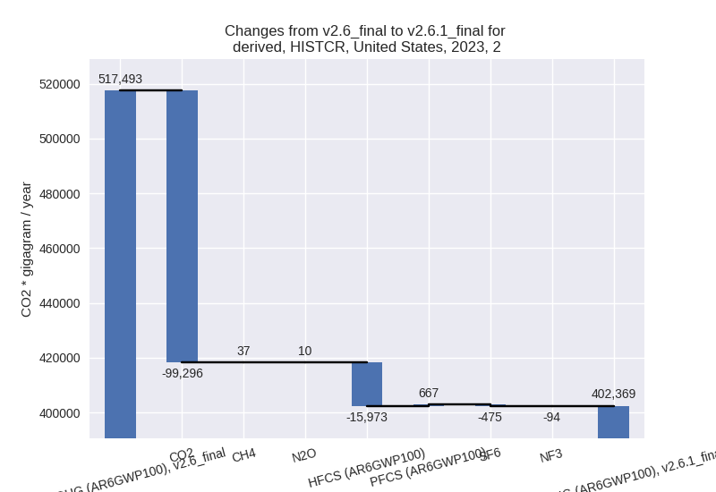
For 1990-2023 the changes per gas
are:
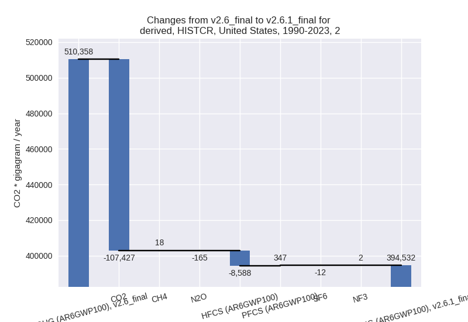
- M.AG: Total sectoral emissions in 2022 are
601692.65 Gg CO2 / year which is 9.4% of M.0.EL emissions. 2023
Emissions have changed by 2.9%
(17111.92 Gg CO2 / year). 1990-2023 Emissions have changed by 0.1% (446.37 Gg CO2 / year). For 2023 the
changes per gas
are:
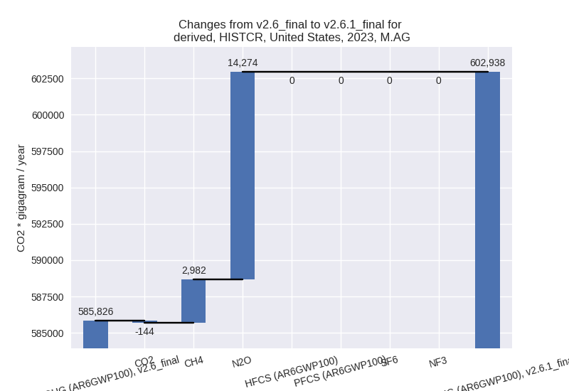
The changes come from the following subsectors:
- 3.A: Total sectoral emissions in 2022 are 273889.91
Gg CO2 / year which is 45.5% of category M.AG emissions. 2023 Emissions
have changed by -1.4% (-3724.09 Gg
CO2 / year). 1990-2023 Emissions have changed by -0.0% (-109.04 Gg CO2 / year).
- M.AG.ELV: Total sectoral emissions in 2022 are
327802.74 Gg CO2 / year which is 54.5% of category M.AG emissions. 2023
Emissions have changed by 6.7%
(20836.01 Gg CO2 / year). 1990-2023 Emissions have changed by 0.2% (555.41 Gg CO2 / year). For 2023 the
changes per gas
are:
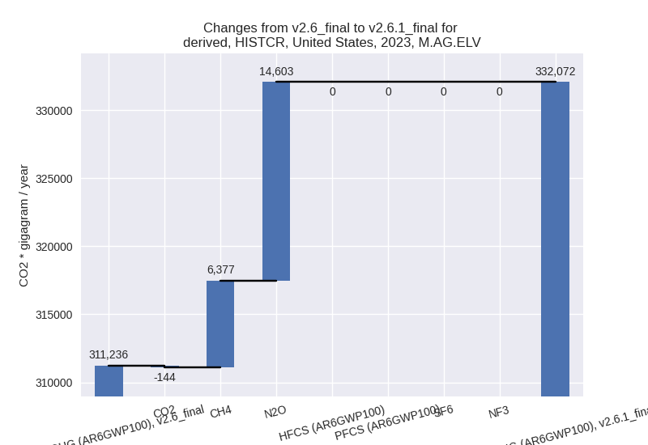
There is no subsector information available in PRIMAP-hist.
- 4: Total sectoral emissions in 2022 are 167073.68
Gg CO2 / year which is 2.6% of M.0.EL emissions. 2023 Emissions have
changed by 1.3% (2229.21 Gg CO2 /
year). 1990-2023 Emissions have changed by 0.0% (54.42 Gg CO2 / year).
- 5: Total sectoral emissions in 2022 are 18206.16 Gg
CO2 / year which is 0.3% of M.0.EL emissions. 2023 Emissions have
changed by -12.9% (-2658.90 Gg CO2 /
year). 1990-2023 Emissions have changed by -6.2% (-1806.87 Gg CO2 / year). For 2023
the changes per gas
are:
For 1990-2023 the changes per gas
are:
third party scenario (HISTTP):
Most important changes
per time frame
For 2023 the following sector-gas combinations have
the highest absolute impact on national total KyotoGHG (AR6GWP100)
emissions in 2023 (top 5):
- 1: 1.B.2, CH4 with 95560.45 Gg CO2 / year (37.9%)
- 2: 1.B.1, CH4 with 35674.04 Gg CO2 / year (131.1%)
- 3: 2, HFCS (AR6GWP100) with 15931.70 Gg CO2 / year (8.6%)
- 4: 2, SF6 with 10730.60 Gg CO2 / year (34.8%)
- 5: 1.B.1, CO2 with 10228.68 Gg CO2 / year (74.5%)
For 1990-2023 the following sector-gas combinations
have the highest absolute impact on national total KyotoGHG (AR6GWP100)
emissions in 1990-2023 (top 5):
- 1: 1.B.2, CH4 with 40020.67 Gg CO2 / year (17.6%)
- 2: 2, HFCS (AR6GWP100) with 20780.44 Gg CO2 / year (18.8%)
- 3: 2, SF6 with 13134.04 Gg CO2 / year (31.7%)
- 4: 1.B.1, CH4 with 8721.51 Gg CO2 / year (11.0%)
- 5: 4, CH4 with -4263.93 Gg CO2 / year (-2.5%)
Changes in the main sectors for aggregate KyotoGHG (AR6GWP100)
are
- 1: Total sectoral emissions in 2022 are 5242946.40
Gg CO2 / year which is 84.7% of M.0.EL emissions. 2023 Emissions have
changed by 2.9% (141708.30 Gg CO2 /
year). 1990-2023 Emissions have changed by 0.9% (52451.51 Gg CO2 / year). For 2023
the changes per gas
are:
The changes come from the following subsectors:
- 1.A: Total sectoral emissions in 2022 are
4806216.70 Gg CO2 / year which is 91.7% of category 1 emissions. 2023
Emissions have changed by 0.0%
(199.00 Gg CO2 / year). 1990-2023 Emissions have changed by 0.1% (3083.39 Gg CO2 / year).
- 1.B.1: Total sectoral emissions in 2022 are
86475.69 Gg CO2 / year which is 1.6% of category 1 emissions. 2023
Emissions have changed by 112.1%
(45902.73 Gg CO2 / year). 1990-2023 Emissions have changed by 9.4% (9336.76 Gg CO2 / year). For 2023 the
changes per gas
are:
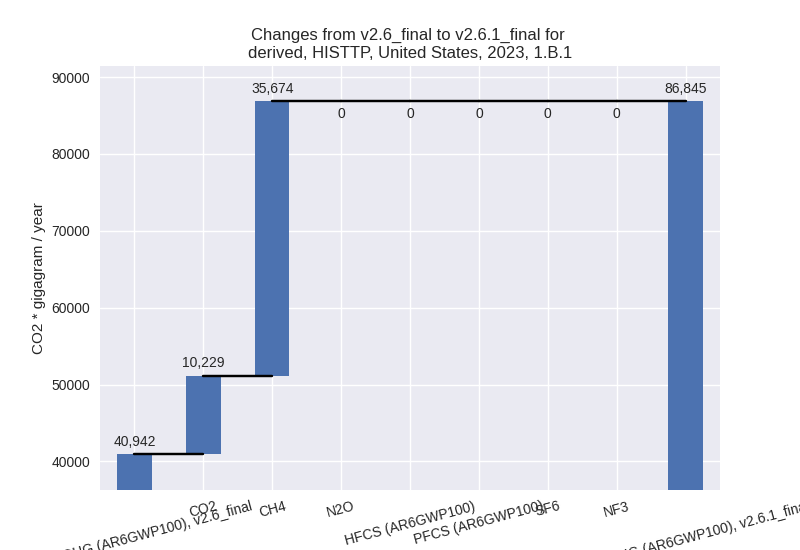
For 1990-2023 the changes per gas
are:
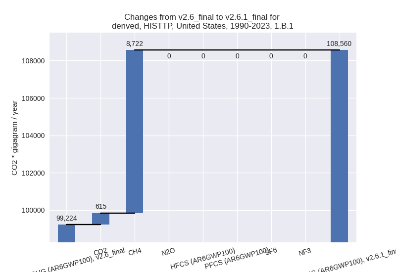
There is no subsector information available in PRIMAP-hist.
- 1.B.2: Total sectoral emissions in 2022 are
350253.95 Gg CO2 / year which is 6.7% of category 1 emissions. 2023
Emissions have changed by 35.0%
(95606.47 Gg CO2 / year). 1990-2023 Emissions have changed by 16.6% (40031.37 Gg CO2 / year). For 2023
the changes per gas
are:
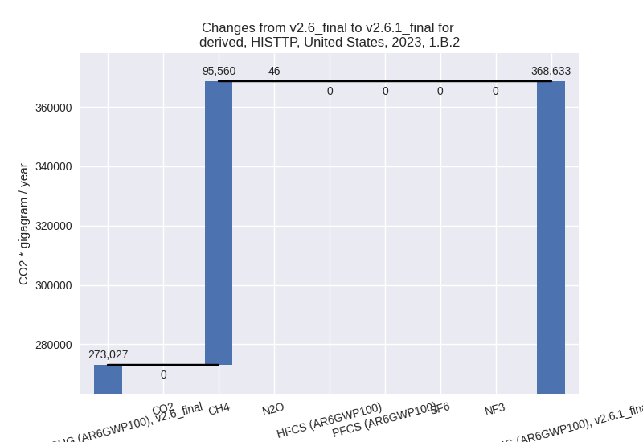
For 1990-2023 the changes per gas
are:
There is no subsector information available in PRIMAP-hist.
- 2: Total sectoral emissions in 2022 are 400717.40
Gg CO2 / year which is 6.5% of M.0.EL emissions. 2023 Emissions have
changed by 7.2% (27112.41 Gg CO2 /
year). 1990-2023 Emissions have changed by 11.1% (33870.52 Gg CO2 / year). For 2023
the changes per gas
are:
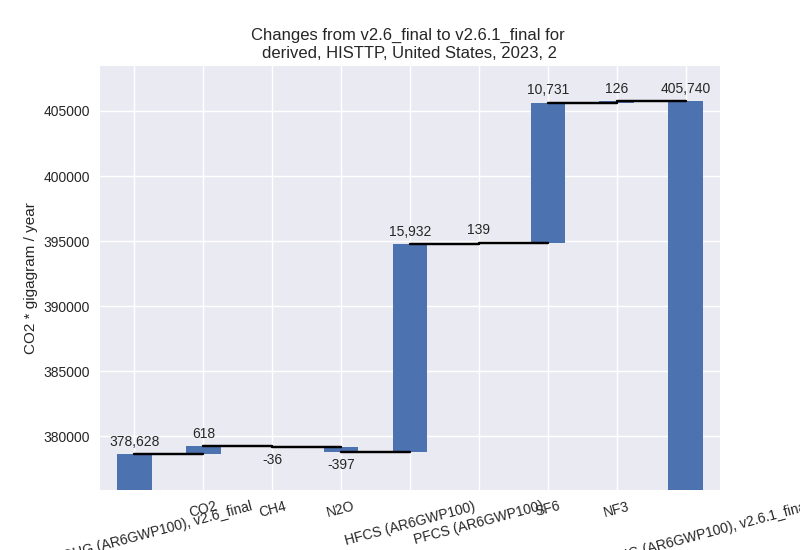
For 1990-2023 the changes per gas
are:
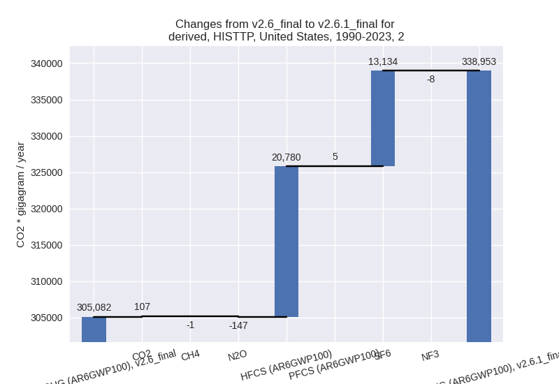
- M.AG: Total sectoral emissions in 2022 are
382318.82 Gg CO2 / year which is 6.2% of M.0.EL emissions. 2023
Emissions have changed by -1.1%
(-4170.67 Gg CO2 / year). 1990-2023 Emissions have changed by -0.1% (-419.77 Gg CO2 / year).
- 4: Total sectoral emissions in 2022 are 146898.44
Gg CO2 / year which is 2.4% of M.0.EL emissions. 2023 Emissions have
changed by -3.8% (-5835.97 Gg CO2 /
year). 1990-2023 Emissions have changed by -2.4% (-4247.79 Gg CO2 / year). For 2023
the changes per gas
are:
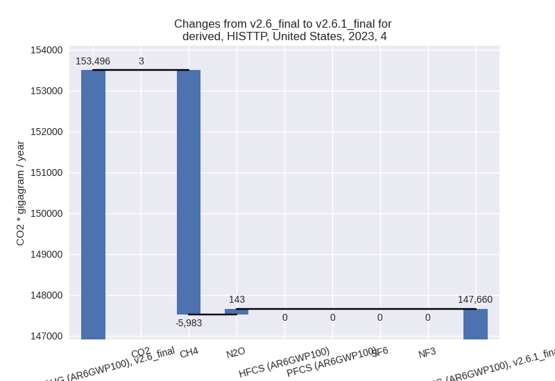
For 1990-2023 the changes per gas
are:
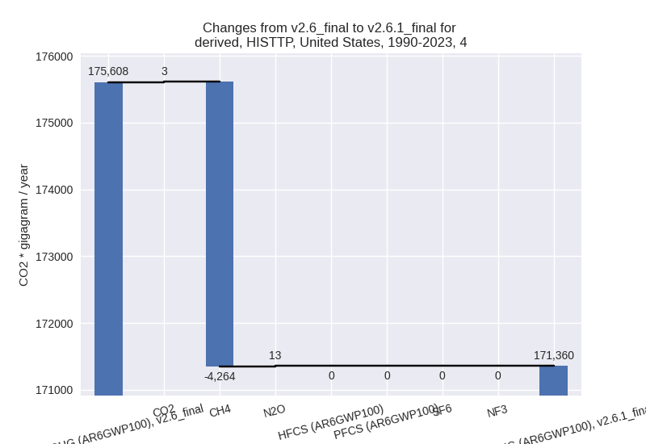
- 5: Total sectoral emissions in 2022 are 18206.16 Gg
CO2 / year which is 0.3% of M.0.EL emissions. 2023 Emissions have
changed by -12.9% (-2658.90 Gg CO2 /
year). 1990-2023 Emissions have changed by -6.2% (-1806.87 Gg CO2 / year). For 2023
the changes per gas
are:
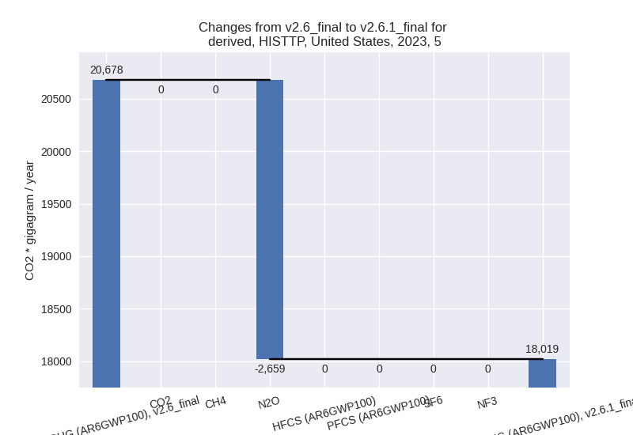
For 1990-2023 the changes per gas
are:
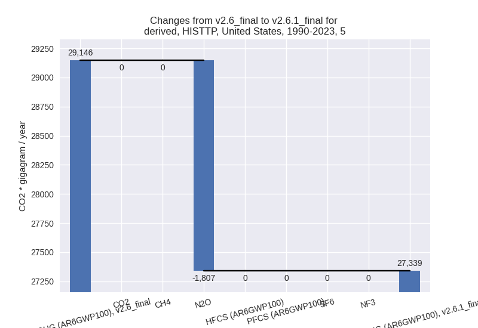